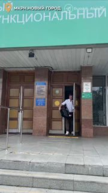

01
Общество и городская среда · событие дня
✅ Родители берут для новорожденных коляски, кроватки, автокресла, ходунки, стульчики для кормления
Обратиться могут молодые и многодетные семьи. Родитель, который один воспитывает ребёнка, а также семьи, в которых есть дети с ограниченными возможностями здоровья. ✅ На сегодняшний день создано 27 филиалов во всех муниципалитетах — на базе отделений соцзащиты.…